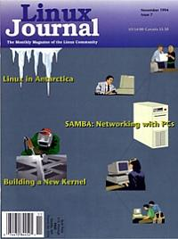

Shutdown Archive web server
Search:
Linux Journal
Issue #7/November 1994

Features
Making the Most of Andrew
by Terry Gliedt
A conclustion of the four-part series on Andrew
Report from the Front: Linux in Antarctica
by Andrew Tridgell
Samba: Unix Talking with PCs
by Andrew Tridgell
A complete history on the development of Samba from its original author.
Linux Performance Tuning for the Faint of Heart
by Clarence Smith Jr.
Guide for rebuilding your kernel
News & Articles
Selecting Hardware for a Linux System
by Phil Hughes
CD-ROMs and Linux
by Jeff Tranter
Linux User Group News
What's GNU?
groff
by Arnold Robbins
Linux Events
Andy
by Andy Tefft
Columns
Letters to the Editor
Stop the Presses
by Phil Hughes
New Products
Archive Index
Shutdown Archive web server
Search:
Copyright © 1994 - 2018
Linux Journal
. All rights reserved.